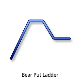
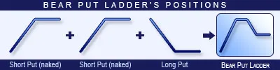
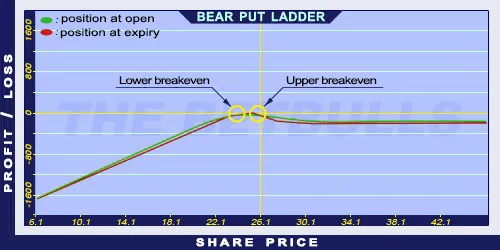

Description and use

Bear Put Ladder is a version of Bear Put Spread, but there is an extra Short Put involved with a lower strike price. Consequently, falling share prices can result a potential unlimited risk. When the share price (Long) is above higher strike price, the position will be potentially lossmaking. The profit is maximised when the share price is between the lower Short Put and the middle component’s strike prices. Because of the extra component, there are both lower and Upper breakeven points. The direction of the market is neutral. The strategy is a net debit investment. It is a short-term investment to avoid the possibility of unlimited losses when share prices fall.
- Type: Neutral
- Transaction type: Debit
- Maximum profit: Limited
- Maximum loss: Unlimited
- Strategy: Vertical spread
Opening the Position

Bear Put Ladder Option Positions
- Sell a lower strike Put option.
- Sell a middle-strike Put option (same quantity and expiration as the other Put option’s).
- Buy a higher strike Put option (same quantity and expiration as the other Put option’s).
Steps
Entry:
- Make sure the trend is inclining.
Exit:
- When the share price is above the Stop Loss, sell the Long Put option and close the Short Put positions (if it is not possible to hold naked Put options).
Basic Characteristics
- Maximum loss: Unlimited. Lower strike - (Higher strike - Middle strike) + Net debit.
- Temporary loss: Net debit.
- Maximum profit: Limited. Higher strike - Middle strike - Net debit.
- Time decay: Time decay has a positive effect on the value. The position is making profit especially around the strike price of the middle component.
- Lower breakeven point: Lower strike - Maximum profit.
- Upper breakeven point: Higher strike - Net debit.
Advantages and Disadvantages
Advantages:
- The costs are lower and the breakeven points are higher than at the Bear Put Spread strategy.
Disadvantages:
- It has an upper limit when share prices are increasing.
- It has no limit when share prices are decreasing.
- The strategy is uncertain.
Closing the Position
Buy back the Short options and sell the Long Put.
Mitigation of Losses
Close the position the above-mentioned way.
Example

Bear Put Ladder strategy example with ABCD traded for $26.10 on 14.05.2017. The investor engages in the following:
- Sells a Short Put option with a strike price of $22.50, expiring in June 2017, for a premium of $0.30.
- Sells another Short Put option with a strike price of $25.00, expiring in June 2017, for a premium of $1.00.
- Then buys a Long Put option with a strike price of $27.50, expiring in August 2017, for a premium of $2.40.
- Net debit: $1.10
- Temporary risk: $1.10
- Maximum risk: $21.10
- Maximum profit: $1.40
- Lower breakeven point: $21.10
- Upper breakeven point: $28.60